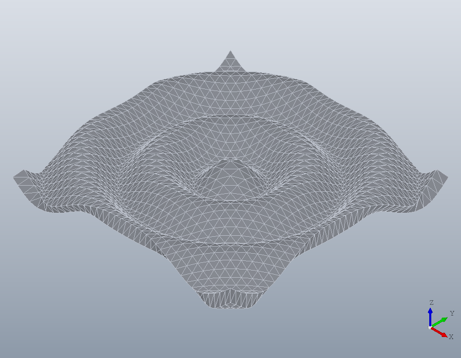
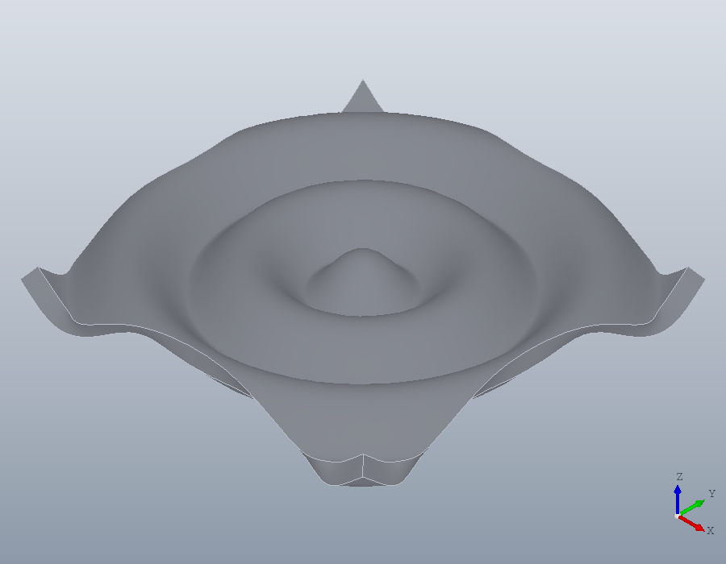
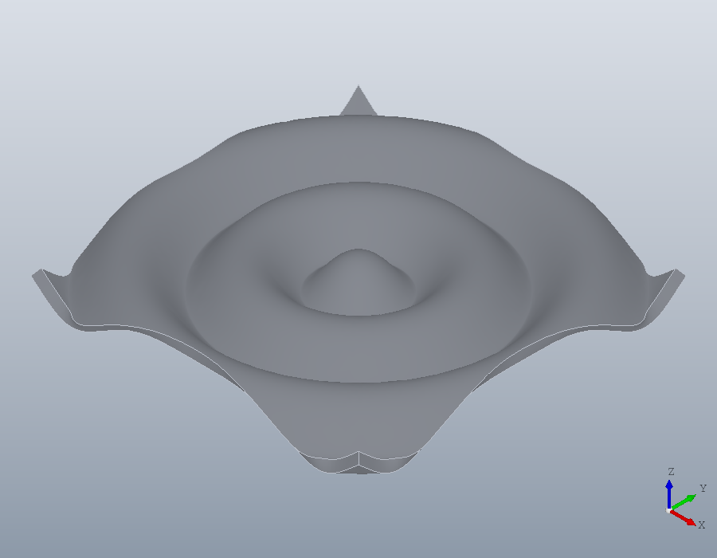

Surfaces through a grid
A shape written as rows and columns of points, as meshgrid makes them, is how many OpenSCAD users build what has no primitive: a ripple, a landscape, a lid that swells. This tutorial makes one such surface twice, first as facets with solid.polyhedron, then as an exact surface with solid.surface, and gives it a thickness so it can be printed.
The grid
A ripple 20 mm across, its height the cosine of the distance from the centre: crests 2 mm apart in height and 5 mm apart across.
[x, y] = meshgrid (-10:0.5:10);
Z = cosd (72 * hypot (x, y));As facets
A solid needs two sides, so the grid is moved half a millimetre along its normals each way, the normals worked out from the slopes gradient gives.
[zx, zy] = gradient (Z, 0.5);
N = cat (3, -zx, -zy, ones (size (Z)));
N = N ./ sqrt (sum (N .^ 2, 3));
P = cat (3, x, y, Z);
top = P + N / 2;
bottom = P - N / 2;Each cell of the grid is split into two triangles, on the top and on the bottom, and four strips of triangles close the edge of one to the edge of the other. K numbers the points of the grid, so the corners of every cell are four blocks of it.
[m, n] = size (Z);
V = [reshape(top, [], 3); reshape(bottom, [], 3)];
K = reshape (1:m*n, m, n);
a = K(1:m-1, 1:n-1);
b = K(2:m, 1:n-1);
c = K(2:m, 2:n);
d = K(1:m-1, 2:n);
F = [a(:), b(:), c(:); a(:), c(:), d(:)];
F = [F; fliplr(F) + m * n];
e = [K(:,1); K(m,2:n)'; K(m-1:-1:1,n); K(1,n-1:-1:2)'];
f = circshift (e, -1);
F = [F; e, f, f + m * n; e, f + m * n, e + m * n];
facets = solid.polyhedron (polymesh.Mesh (V, F));
numfaces (facets)
show (facets);ans = 6720
Every triangle is a face of its own, flat, and the ripple is only as round as the grid is fine.
As an exact surface
solid.surface takes the same grid and has Open CASCADE fit one smooth surface through it, passing within 0.001 mm of every point, then makes a solid of it, the surface thickened square to itself. The thickness is given as solid.extrude takes its height: [0.5, 0.5] is half a millimetre to each side, a skin of 1 centred on the surface. The normals, the triangles and the edges are all its work.
S = solid.surface (x, y, Z, [0.5, 0.5]);
numfaces (S)
show (S);ans = 6
Six faces: the ripple on top, the ripple below and the four sides. A cut through the middle shows the difference plainly: the facets give an outline of 82 short lines, the surface one of four pieces, the two curves of the ripple and the two sides.
U = geom.UCS ([0, -1, 0], [0, 0, 0]);
cut = section (facets, U);
cut{1}
cut = section (S, U);
cut{1}ans =
geom.Region: an outline of 82 segments, 0 holes
ans =
geom.Region: an outline of 4 segments, 0 holesWhich side
The normal of the surface is the step from one column of the grid to the next crossed with the step from one row to the next. For a grid from meshgrid that is x then y, so the normal points up. A positive thickness grows along the normal, the surface the bottom of the solid, a negative one against it, and two, [H1, H2], lie along the normal and against it.
A surface cannot be thickened by more than the radius it curves with, or it folds over itself. The crests and troughs of this ripple curve with a radius of 0.63 mm, so a centred skin of 1, reaching 0.5 each way, fits, but the whole millimetre on one side does not, and that is refused:
try
solid.surface (x, y, Z, 1);
catch err
disp (err.message)
end_try_catchsolid.surface: the surface curves more tightly than the thickness along its normal allows; its tightest radius on that side is 0.632.A thinner skin on that side fits:
T = solid.surface (x, y, Z, 0.6);
show (T);
A grid that comes to a point is rounded off there by the fit, tightly. The sine of the distance rises from the centre like a cone, so the ripple made with sind instead of cosd takes no skin of 1 even centred:
try
solid.surface (x, y, sind (72 * hypot (x, y)), [0.5, 0.5]);
catch err
disp (err.message)
end_try_catchsolid.surface: the surface curves more tightly than the thickness along its normal allows; its tightest radius on that side is 0.115.To the printer
The solid is written like any other: STEP keeps the exact surface for another CAD program, and STL is meshed from it for a slicer, as finely as the tolerance asks.
write (S, 'ripple.step');
write (S, 'ripple.stl');